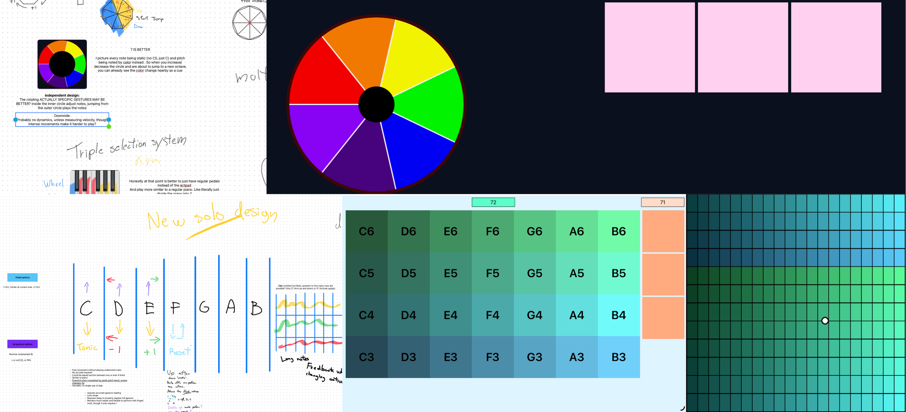
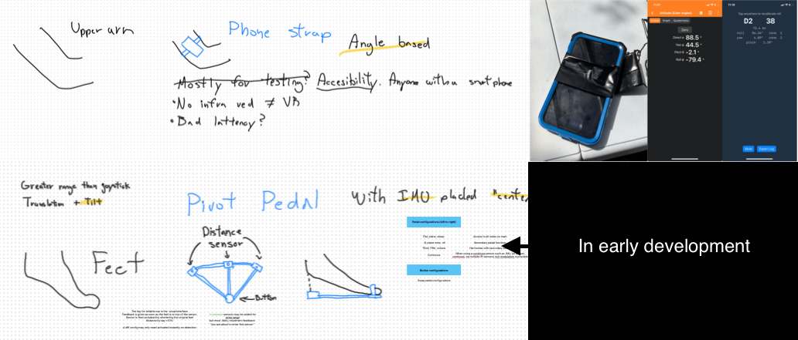

Wireless MIDI controller that leverages smartphone's attitude reading capabilities for pitch control, and pairing with a custom embedded hardware module for note activation control, instrument dynamics, and other features.
Independent Electronics Project — Post-Graduate (2026–Present)
Project Highlights
- Engineering Project Management: Managing the project lifecycle from concept, constructing hardware/software development phases.
- Electronic Concept Design: Designed custom note-maps and musical interfaces, prioritizing full expression control to be on pair with existing instruments, but also providing nobel capbilities that go beyond existing instruments.
- Testing and Diagnosis: Conducting testing and diagnosis to ensure real-life viability and performance.
- Real-Time Architecture: Low latency and high consistency architecture to meet requirements for a controlled music performance.
Target Technologies
- Hardware: IMU, Smartphone IMU, IR Proximity (tentative), ESP32 (tentative)
- Software: Swift, Kotlin (tentative), C++, Python (prototyping only), Phyphox
Status and Projections
Currently in the design and testing phase.
Next Steps: Smartphone latency optimization and drift correction solutions, followed by a "full song cover" test, for decisive evaluations.

